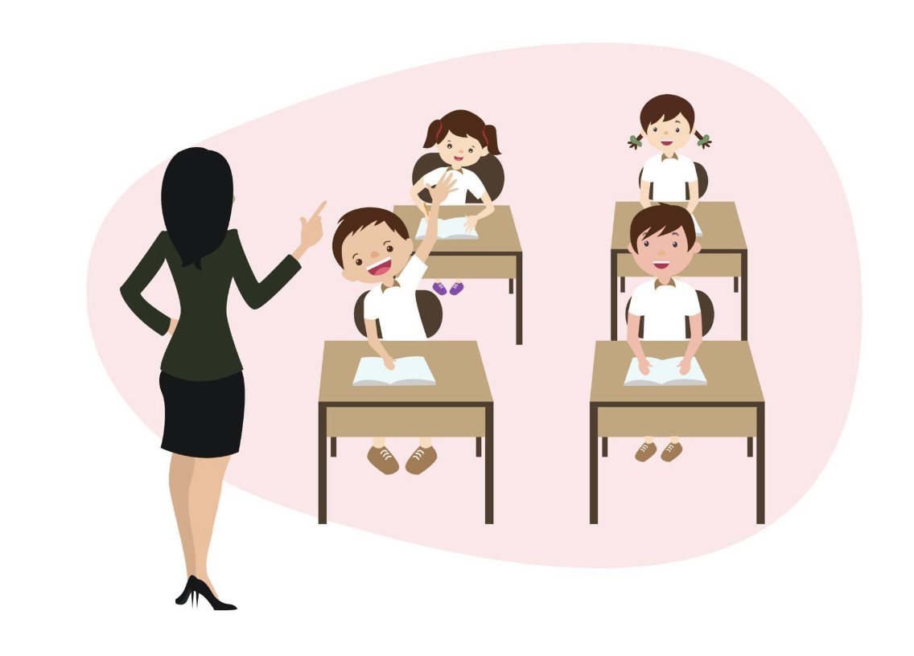

What is the NDIS?
There are about 4.3 million disabled people in Australia. The NDIS will fund supports and services for an estimated 500,000 Australians with permanent and substantial disabilities over the course of the following five years. Many people will be receiving the necessary disability help for the first time as a result.
- National: All states and territories are gradually implementing the NDIS.
- Disability: The NDIS provides support to eligible people with intellectual, physical, sensory, cognitive and psychosocial disability. Early intervention supports can also be provided for eligible people with disability or children with developmental delay.
- Insurance: The NDIS gives all Australians peace of mind if they, their child or loved one is born with or acquires a permanent and significant disability, they will get the support they need.
- Scheme: The NDIS is not a welfare system. The NDIS is designed to help people get the support they need so their skills and independence improve over time.
How the NDIS Works?
NDIS services

Aged Care
As you get older, living independently in your own home can become more difficult. If you’re finding it harder to do the things you used to, you can ask for some help.
Maybe you need some help after a hospital stay, or support if your regular family carer is taking a holiday. Short-term care can help you cope with life’s interruptions.
You might be at a stage where you no longer feel able to live independently at home, even with carer support or home care services to help you. If that’s the case, it may be time to consider moving into an aged care home.

Family Support
We support families struggling with poverty, violence, homelessness, mental illness, social isolation or drug and alcohol abuse, to help keep their children safe and prevent them from entering foster care.
We build community connections to encourage families to support each other, improving their social and emotional wellbeing and the wellbeing of their children.

Transport
Support to help you travel independently, such as training to use public transport or assistive technology to help you travel.
Vehicle modifications for private vehicles – that is, modifications for cars or other vehicles you or your carers own, but not modifications for public transport or taxis.

School Education
The school education system is responsible for supports where the main purpose is to help you learn, study and achieve education outcomes. This includes:
- adjusting teaching methods
- providing learning assistance and aids
- modifying the school building
- providing transport between school activities

Employment
Government employment services and programs for people with disability and employers.
Employers and their responsibility to provide a safe, inclusive, accessible and supportive workplace for people with disability.
NDIS Benefits
Here are the ways how NDIS benefits Australian citizens with a disability:
- NDIS helps the people with disability by providing services and lessening the expenses, medical costs and other inconveniences.
- NDIS provides people with disability and their families regular care, support, therapy and equipment they need.
- NDIS helps every person with equality. You will be able to get the NDIS support regardless of when and where disability was acquired.
- With the help of healthcare facilities provided by NDIS, participant’s wellbeing and their employment opportunities will increase. They will be able to reach their life goals.
NDIS Application
Read more information, click the link of NDIS: https://www.ndis.gov.au.